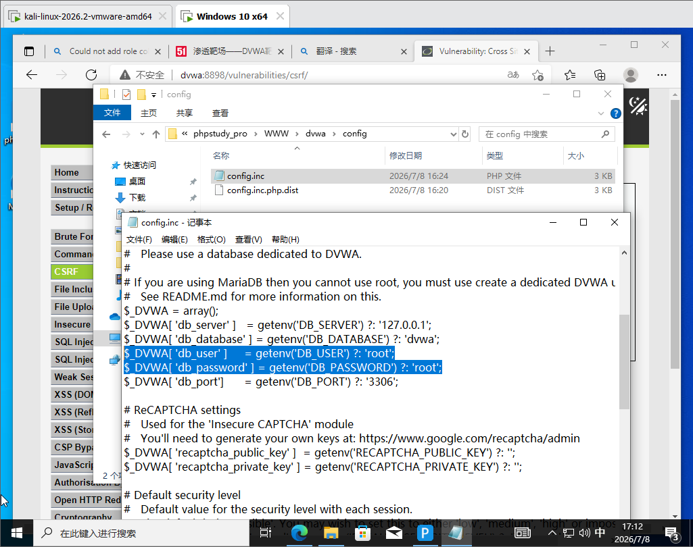
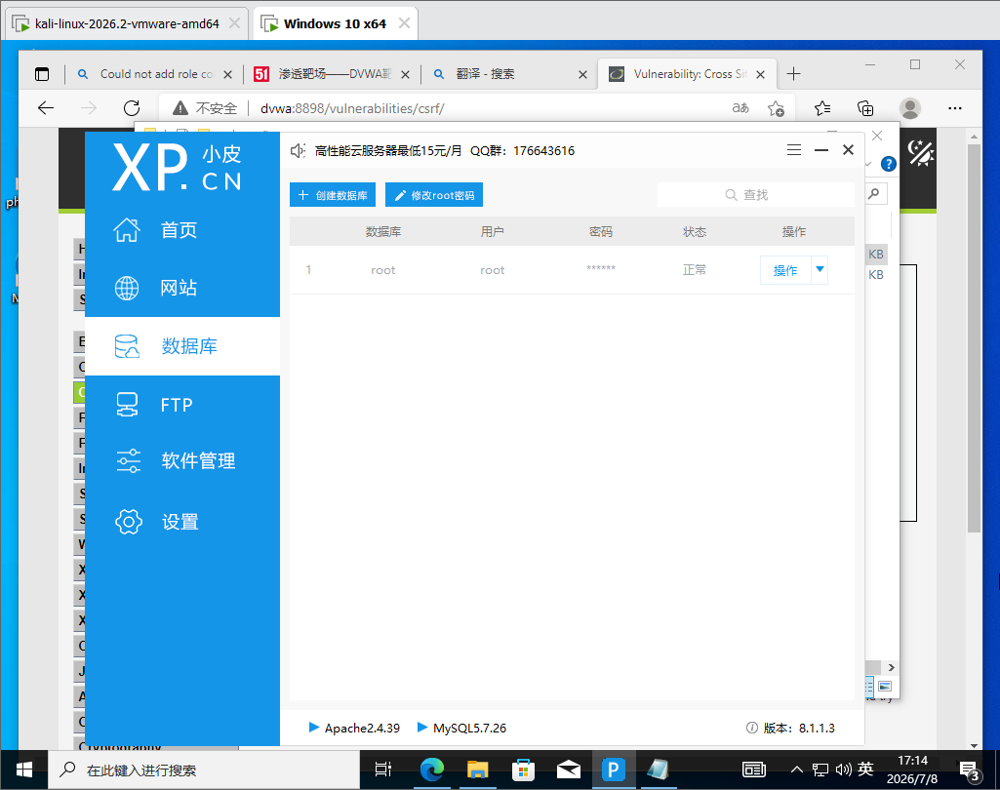
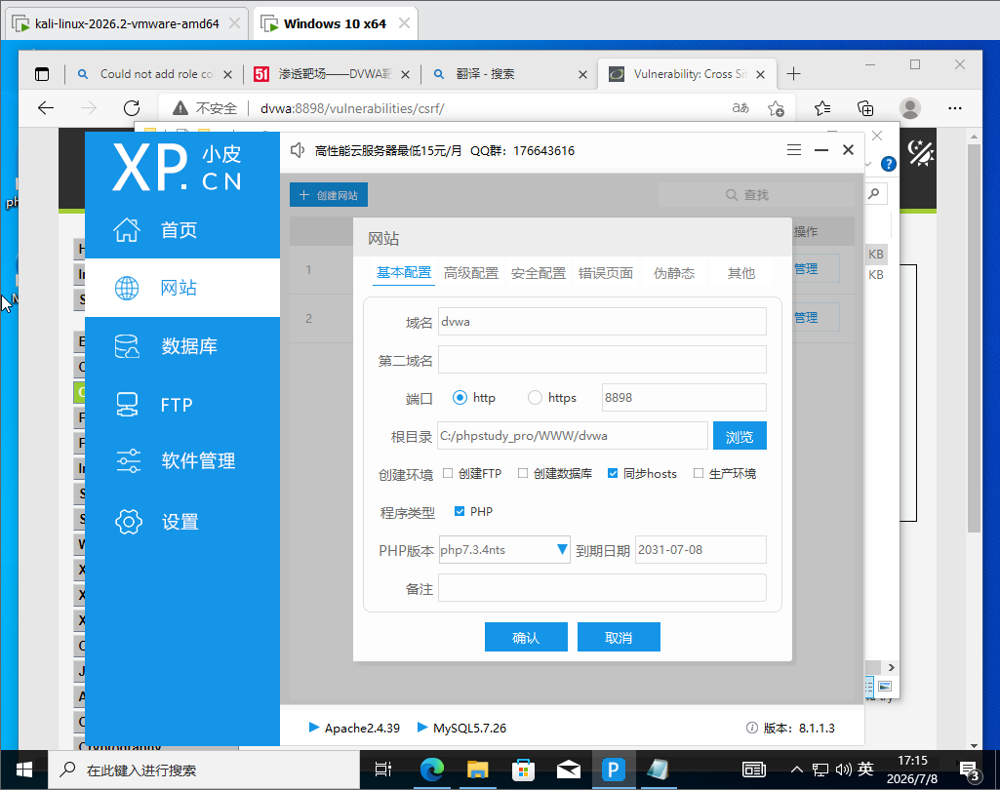
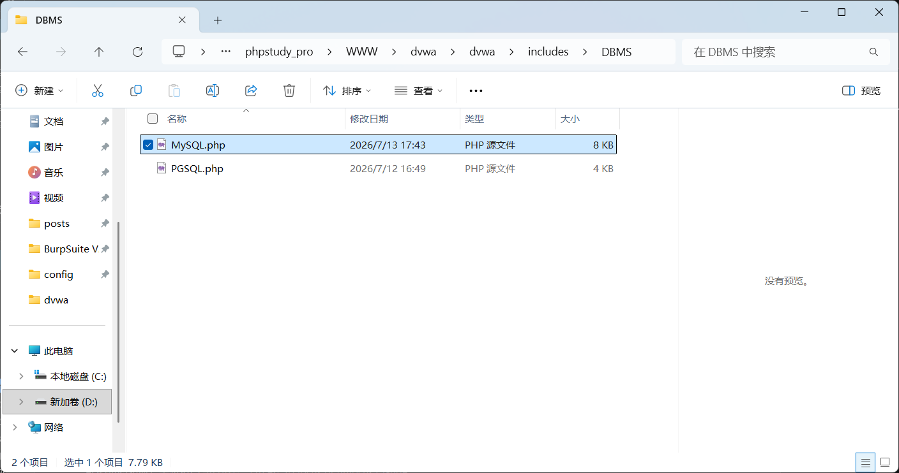
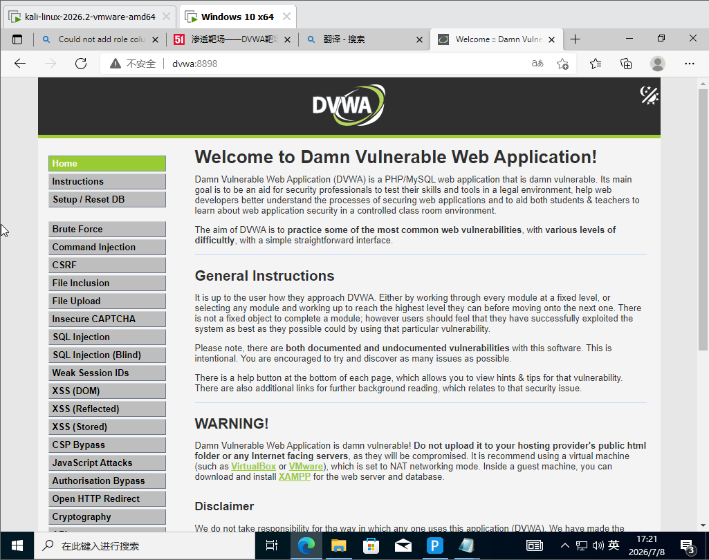
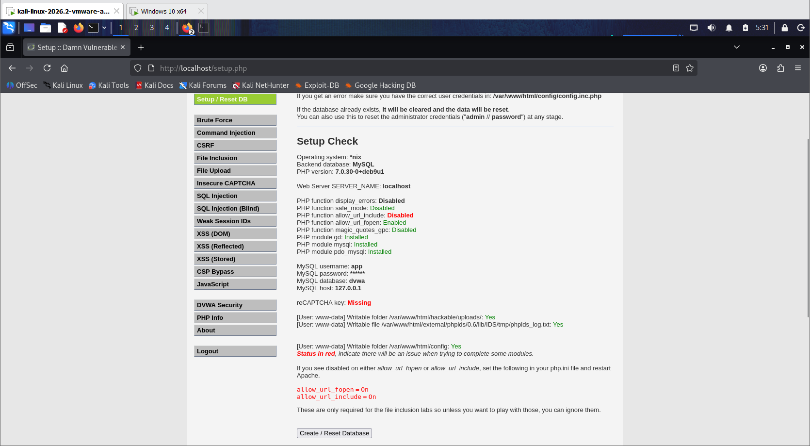

搭建DVWA靶场
Windows版
-
去 phpstudy 官网（xp.cn）下载 phpstudy_pro，安装
-
面板里启动 Apache + MySQL 两个服务，看到绿灯就是正常
-
下载 DVWA 源码（GitHub：https://github.com/digininja/DVWA，点 Code → Download ZIP）
-
解压后整个文件夹丢进 phpstudy 的网站根目录（一般是
phpstudy_pro\WWW\），重命名为dvwa -
改配置：进
dvwa\config\把config.inc.php.dist复制一份改名config.inc.php，用记事本打开，把数据库账号密码改成 phpstudy 的（默认都是root/root）

- 打开小皮面板创建数据库，用户名密码和文件修改后的保持一致

- 创建网站，填写域名，修改端口号，其他不动，确定后重启服务

- 浏览器访问
http://127.0.0.1/dvwa：8898，输入账密登录，点最下面 Create / Reset Database
[!NOTE]
如果出现初始化问题参考如何搭建 DVWA 靶场保姆级教程（附链接）_dvwa靶场搭建-CSDN博客
补充：如果提示（这是dvwa和mysql版本的语法兼容性问题）
Could not add role column to users table SQL: You have an error in your SQL syntax; check the manual that corresponds to your MySQL server version for the right syntax to use near 'IF NOT EXISTS role VARCHAR(20) DEFAULT 'user'' at line 1。
找到这个文件

搜索IF NOT EXISTS，将其删除保存
刷新浏览器再次执行初始化。
-
重新打开登录页面，登录
-
完成

Linux版
1、安装docker(已安装可跳过)
按顺序在 Kali 终端敲（需要 root，命令前的 sudo 别漏）：
# 1. 更新软件源
sudo apt update
# 2. 安装 docker.io（Kali/Debian 源里自带，最简单）
sudo apt install -y docker.io
# 3. 启动 docker 服务，并设为开机自启
sudo systemctl enable docker --now
# 4. 验证是否装好
sudo docker --version
看到类似 Docker version 20.x.x 就说明装成功了。
2、免 sudo 用 docker
把当前用户加进 docker 组，以后不用每条命令都打 sudo：
sudo usermod -aG docker $USER
⚠️ 这步之后必须重新登录（注销再登录，或直接重启 Kali）才生效。嫌麻烦就先跳过，后面命令都带 sudo 也行。
3、拉起DVWA
sudo docker run -d -p 80:80 --name dvwa vulnerables/web-dvwa
如果报错
Unable to find image 'vulnerables/web-dvwa:latest' locally docker: Error response from daemon: Get "https://registry-1.docker.io/v2/": net/http: request canceled while waiting for connection (Client.Timeout exceeded while awaiting headers)
直接看4修改下载源
跑完确认容器在运行：
sudo docker ps
能看到名为 dvwa 的容器、状态 Up 就对了。
容器管理常用命令:
| 命令 | 作用 |
|---|---|
docker ps |
看正在运行的容器 |
docker ps -a |
看所有容器(含已停止的) |
docker start dvwa |
启动已停止的容器 |
docker stop dvwa |
停止容器 |
docker rm -f dvwa |
强制删除(运行中也能删) |
4、配镜像加速源
编辑（没有就新建）daemon.json：
sudo nano /etc/docker/daemon.json
粘贴以下内容（多个源，一个不行会自动试下一个）：
{
"registry-mirrors": [
"https://docker.1ms.run",
"https://docker.1panel.live",
"https://hub.rat.dev",
"https://docker.m.daocloud.io"
]
}
nano 里保存：Ctrl+O → 回车 → Ctrl+X 退出。
重启 Docker 让配置生效：
sudo systemctl daemon-reload
sudo systemctl restart docker
确认加速源已加载（输出末尾能看到 Registry Mirrors 列表）：
sudo docker info
然后重新拉：
sudo docker run -d -p 80:80 --name dvwa vulnerables/web-dvwa
5、访问
在 Kali 自己浏览器访问：http://127.0.0.1
登录页用 admin / password，进去后先点 Create / Reset Database，再把 DVWA Security 调到 Low。

完成。